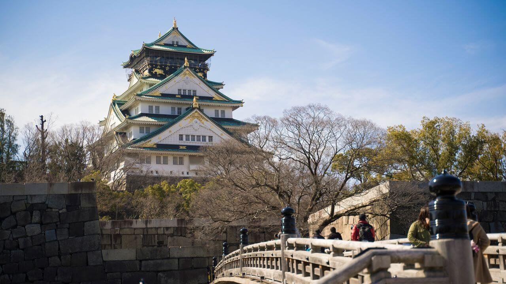
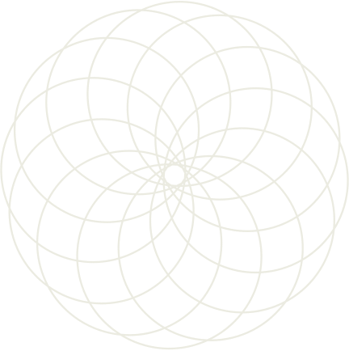
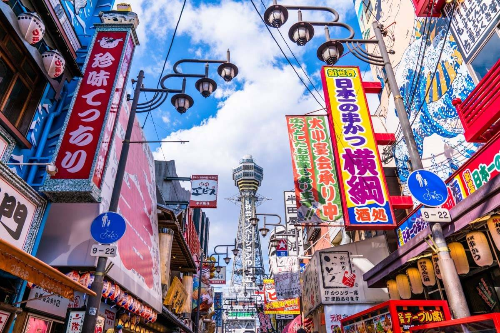
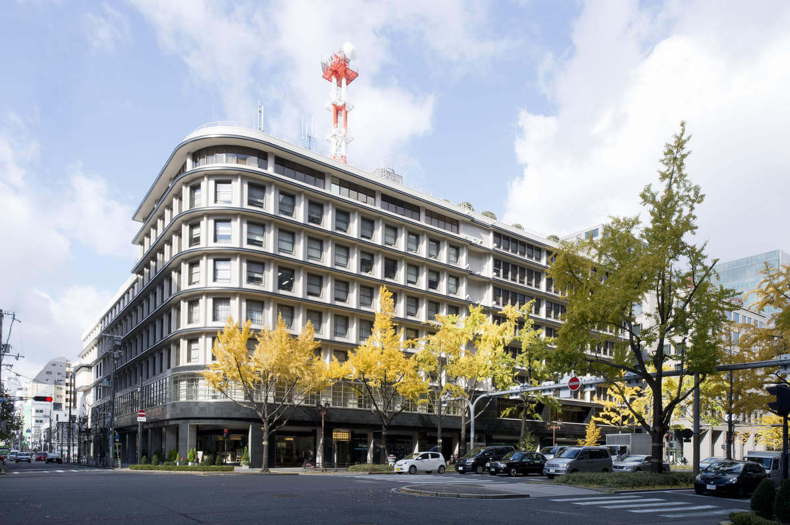

古今建築
古代と現代の建築
大阪城天守閣
おおさかじょう
天守閣是大阪的地標，但現在的天守閣實際上是已經是第三代天守閣。豐臣政權時期的大阪城天守閣建於1585年，主色調為黑色，在1615年的大阪夏之陣中被毀。江戶幕府時代的大阪城天守閣則修建於1626年，但在1665年被雷擊後燒毀。
現在的大阪城天守閣修建於昭和初期，主色調和江戶時代的天守閣相同，都是白色，但也融合了豐臣時代大阪城天守閣的建築特徵。

通天閣
通天閣
つうてんかく
通天閣是位於大阪市浪速區，俗稱「新世界」中央的電視塔，建於1956年。現存的通天閣其實是第2代，高100公尺。第1代通天閣模仿巴黎的艾菲爾鐵塔和凱旋門，建於1912年，當時64公尺高的通天閣是當時東洋最高的建築，猶如通天之高，因而取名有著「直通天空的閣樓」意思的通天閣，命名的是日本明治初期的儒學者藤澤南岳。

瓦斯大廈
ダイビル
大阪瓦斯大廈是御堂筋大道邊的轉角處的一幢黑白顏色對比強烈的大樓。昭和8年（1933年）投入使用。其設計者為涉及過「大阪俱樂部」和「高麗橋野村大廈」而聞名的安井武雄。
位於8層的煤氣大廈食堂是一家餐館，從東京帝國飯店請來廚師製作的歐式料理曾一度讓當年的民眾無比憧憬。大廈1樓有煤氣器具展覽處和大廳，還有使用最新煤氣烹調器具的烹調學習室。這座建築物在平成15年（2003年）被列入了登記有形文化財產。